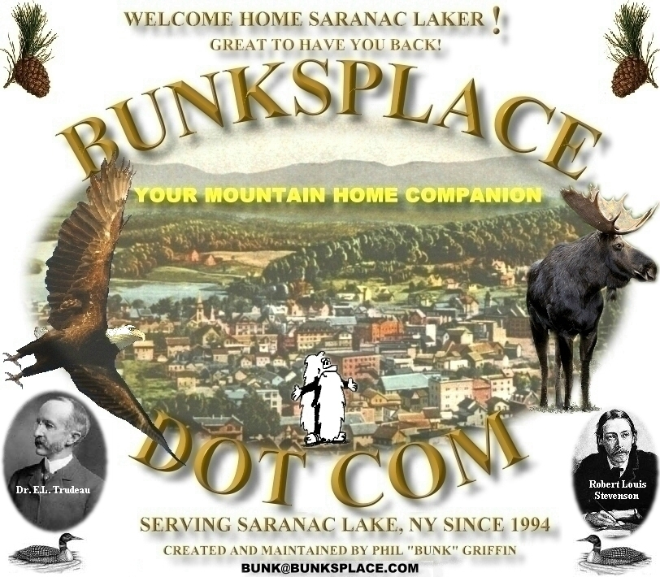
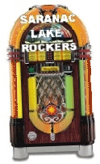
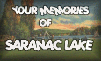
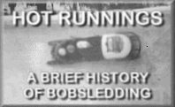
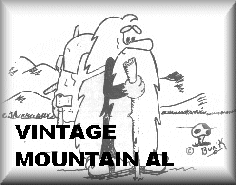
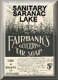

SARANAC LAKE, NY---JUST A DARN NICE LITTLE VILLAGE
WITH A TOUCH OF "NORTHERN EXPOSURE"
23rd YEAR ONLINE

2017 FLORIDA REUNION FOR ALL SARANAC LAKE CLASSES FROM BOTH SCHOOLS
HELP!
During WW II hundreds of Norwegian merchant sailors ended up in Saranac Lake as tuberculosis patients.
Natalie Leduc is putting together a story about the sailors for the SARANAC LAKE HISTORICAL SOCIETY and would appreciate any info you might have on the subject. Her address is natski@roadrunner.com
ADIRONDACK DAILY ENTERPRISE ARTICLE ABOUT BUNKSPLACE
VISIT ALL YOUR SARANAC LAKE FRIENDS ON FACEBOOK
Adirondack Bunk | Create Your Badge















CAUTION: READING THE WATERFRONT REVITALIZATION PROJECT IN IT'S ENTIRETY MAY CAUSE PERMANENT BRAIN DAMAGE!!
DO YOU FEEL WE'RE BEING WATCHED? WHAT IS THAT TRAFFIC LIGHT ON THE TOWN HALL?

My ol' buddy, pianist, composer, arranger, raconteur and music educator Phil Klein has kindly agreed to jot down his early memories of life in Saranac Lake for the site. Here they are and more to come!
PHIL KLEIN'S RAMBLIN' PROSE
TRY THIS SARANAC LAKE TRIVIA QUIZ


 REMEMBER THE SARANAC LAKE / KATRINA CONNECTION OF AUGUST 2005?
HERE ARE THE DRAMATIC EMAILS PLUS AN AMAZING TELEVISION INTERVIEW WITH SARANAC LAKERS AFFECTED BY KATRINA.
REMEMBER THE SARANAC LAKE / KATRINA CONNECTION OF AUGUST 2005?
HERE ARE THE DRAMATIC EMAILS PLUS AN AMAZING TELEVISION INTERVIEW WITH SARANAC LAKERS AFFECTED BY KATRINA.
THINK LIFE WAS BORING IN SARANAC LAKE IN THE DAYS OF YORE?---WRONG!!!
TAKE A GLANCE BACK THROUGH THE "REAR VIEW" MIRROR AND READ ABOUT THE BOOTLEGGERS, MURDERERS, PIRATES AND DISASTERS OF SARANAC LAKE!

SCARS ON ICE
Have you ever seen an old guy ice fishing all alone and wondered why he was smiling?
Did you wonder if he was lonely? DON'T BOTHER HIM!!
 Scars On Ice(click Mountain Al)
Scars On Ice(click Mountain Al)
QUOTE: "Saranac Lake is suffering from one thing - ignorance --- I can't feel sorry for Saranac Lake." No, not Dr. Phil but Dr. Millard C. Faught!
"SARANAC LAKE NEEDS TO SELL ATTRIBUTES" (from 1948 ADE)
THE GOOD OL' DAYS - 1929


THE BAD OL' DAYS - 1918


This site has received a
Rating from
"Schnibco's
List of Best Web Sites
Originating From Zip Code 12983-1128"
BUNKSPLACE